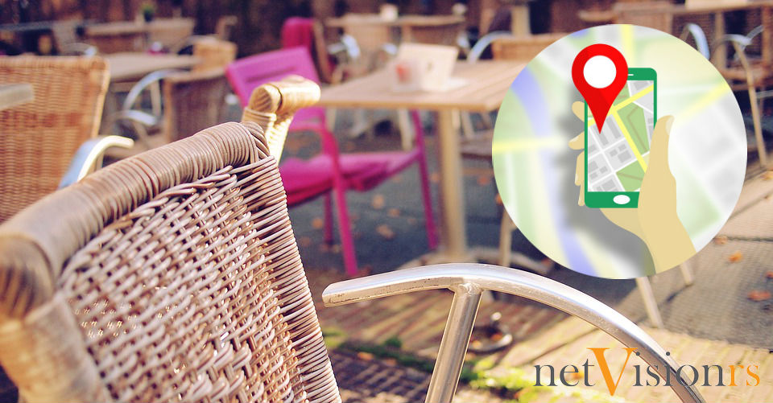

Lokalni SEO - Google my Bussines
Iz ugla Gugla: Kako lokalni SEO jača vrednost vašeg brenda
Iz firme s čijim poslovanjem niste upoznati su vas pozvali na razgovor.Šta ćete prvo uraditi? Kao digitalno pismena osoba, potražiti ih na Guglu. Na osnovu letimičnog pregleda rezultata stvorićete utisak o njihovom poslovanju.
Gugl obožava onlajn recenzije, a brojke to i dokazuju. Rangirajuće onlajn recenzije, uključujući njihov broj i brzinu postavljanja, velikim delom doprinose ukupnom rangiranju neke firme na lokalnom nivou, prema Moz-u (nekih 9%). Da li ste se ikada zapitali zašto ih Gugl toliko voli?
To je zato što ih i kupci takođe vole. 88% kupaca im veruje isto koliko i ličnim preporukama. Ono što vaši klijenti misle o vama čini centralni deo vašeg „Snack Pack” rangiranja (prva tri rezultata na Guglovom lokalnom pretraživanju).
Detaljno uputstvo kako da izdominirate na Guglu uz „Snack Pack“ metodologiju možete pročitati u ovom tekstu.
Još jedna važna promena u vezi sa lokalnim SEO-m je dodavanje detalja o mestu (place details), takođe poznato kao osobine firmi (business attributes). One ne samo da pomažu potencijalnim klijentima, već i dokazuju važnost lokalnog SEO-a. Evo i zašto.
Šta su osobine firmi i kako vam to može pomoći
Ako ste ikada koristili aplikaciju Gugl mape (Google Maps) kada god posetite neko mesto (tj. kada se „čekinujete” negde), onda ste možda primetili da postoji mogućnost da dodate neke dodatne informacije o tom mestu. To su detalji o mestu (osobine firmi). Naravno, neki ljudi bi možda želeli da znaju čime se trenutno bavite, gde se to mesto nalazi u gradu, kao i još neke dodatne informacije. U ovome je aplikacija Gugl maps i dalje lider među korisnicima mobilnih telefona jer je koristi gotovo 70% korisnika u odnosu na glavnog konkurenta. Ukratko, detalji o mestu predstavljaju opisni sadržaj koji se odnosi na vašu firmu.
Možete dodati sledeće vrste informacija:
- Koju vrstu plaćanja prihvatate
- Besplatan parking
- Pristupačnost za hendikepirana lica
- Mogućnost naručivanja hrane
i još mnogo toga drugog...

Zbog čega su osobine firmi toliko važne?
Inicijacija jednostavnog pretraživanja u klijente se svodi na to da budete vidljivi kako bi vas primetili i da zainteresujete za ono što nudite. Zamislite to kao tradicionalno poslovanje na prometnoj ulici: kupac vas mora primetiti, a nakon što se to desi, vi ga morate pridobiti.
Mobilni telefoni su promenili naš svakodnevni život i odluke koje donosimo u vezi sa kupovinom; zapravo, pretraživanja sa ključnim rečima „blizu mene” (near me) svake godine rastu za 146%, od kojih 88% dolazi sa mobilnih uređaja.
Naravno da niko od nas nema vremena da ide na drugi kraj grada da bi dobio određenu uslugu, svi idemo ka tome da automatizujemo, pojednostavimo svoj život i da nam sve bude nadohvat ruke.
Iz Gugla poručuju da je ovo dovelo do stvaranja mikro-momenata, odnosno trenutaka u vremenu kada imate priliku da privučete kupca onim što je njemu zaista potrebno.
Upravljanje osobinama vaše firme će učiniti da izgledate neuporedivo bolje svim potencijalnim kupcima, pogotovo ako vaša konkurencija zaostaje u ovom pogledu.
Nedovoljno ili loše online prisustvo jedne firme jednako je nemaru. Razmslite, imate priliku da istaknete sve bitno u vezi vaše firme, a vas mrzi da to uradite. To je identično kao da u kancelariji držite uvelo cveće i prljave zavese – šaljete poruku da ste nemarni i da vas nije briga za klijente.
Misli globalno, uloži u lokalni SEO
Već smo pomenuli da 88% pretraživanja sa ključnim rečima „blizu mene” dolaze sa mobilnih uređaja, a da ukupna pretraživanja rastu 146% iz godine u godinu, ali to nije dovoljno da bi se dokazala važnost lokalnog SEO-a.
Niti je dovoljna činjenica da će gotovo 80 milijardi dolara biti potrošeno na SEO do 2020. godine. Ono što bi trebalo da bude najveći dokaz je to što je Gugl, pretraživač koji pokreće Internet, postepeno postavio sebe kao najbolju destinaciju za bogat i opisni sadržaj o lokalnim mestima.
Ovo se uklapa u Guglove veće ciljeve u pogledu korisničkog iskustva. Poslednje promene poput ažuriranja koja su usmerena ka optimizaciji za mobilne uređaje, lokalni „snack pack”, čekinovi na Gugl mape i osobine firmi pokazuju koliko su Guglu važna dešavanja na lokalu.
Može se slobodno reći da ako Gugl mari, onda i klijenti takođe mare.
Detalji o mestu pružaju kupcima – a sada i vlasnicima takođe zbog MyBusiness ažuriranja – mogućnost da upravljaju osobinama firmi. Vi sada imate moć da budete i vidljivi klijentima i da im takođe pružite tačno ono što oni traže.
Ne samo što su oni od velike važnosti za vaš uspeh, već i dokazuju važnost napredovanja lokalnog SEO-a.
Rezime
U kom će se ovo smeru razvijati, možemo da pretpostavimo, ali uzevši u obzir promene koje su desile u poslednjih 10 godina i te kako će biti još iznenađenja.
Setite se samo kako je izgledalo odabrati destinaciju za letovanje, rezervisati večeru u nekom restoranu ili saznati nešto o nekoj osobi ili nečijem poslovanju.
Setite koliko je napora trebalo recimo nekoj novoj firmi da se čuje za nju: prisustvo u “žutim stranama”, zakup papreno skupih bilborda, besmislena sponzorstva zarad vidljivosti… a pogledajte sada! Uz pažljivu analizu tržišta, kombinaciju strategija i pametno ulaganje, vidljivost je zagarantovana!
Ne samo vidljivost, garantovana je prodaj roba i usluga.
Živimo u vremenu automatizacije. Sve oko nas, poslovanje, procesi, tehnika, čak i kuvanje teži uprošćavanju. Pogledajte samo evoluciju “pametnih telefona” koji su najpre bili komplikovani za korišćenje, a danas su toliko intuitivni, da bukvalno svako može da ih koristi. Sve ide ka automatizaciji.
S druge strane, postali smo komformisti i razmaženi više nego ikada. Ono što nam treba želimo u istom trenutku, servirano, ako je moguće uz minimum zalaganja. Sve što je moguće završavamo na klik.
Kako će sve ovo uklopiti u Google i lokalni SEO, zaključite sami.
Ukoliko vam je ovaj tekst bio koristan, sigurno će biti i vašim prijateljima pa vas molimo da ga podelite na vašoj društvenoj mreži. Hvala!

SEO smernice za 2019 godinu
Pročitajte na šta treba da obratite pažnju u 2019 godini....
Detaljnije...

Linkbuilding Tutorijal za 2019
Zašto su backlinkovi i dalje najvažniji za optimizaciju sajta...
Detaljnije...

Kad dolaze SEO rezultati?
Kada SEO počinje da generiše veću prodaju, kad dolazi rangiranje...
Detaljnije...